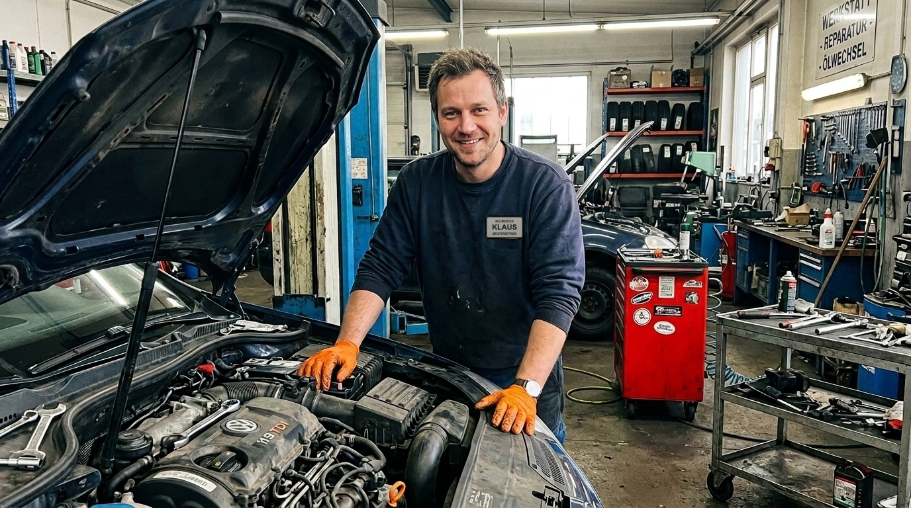
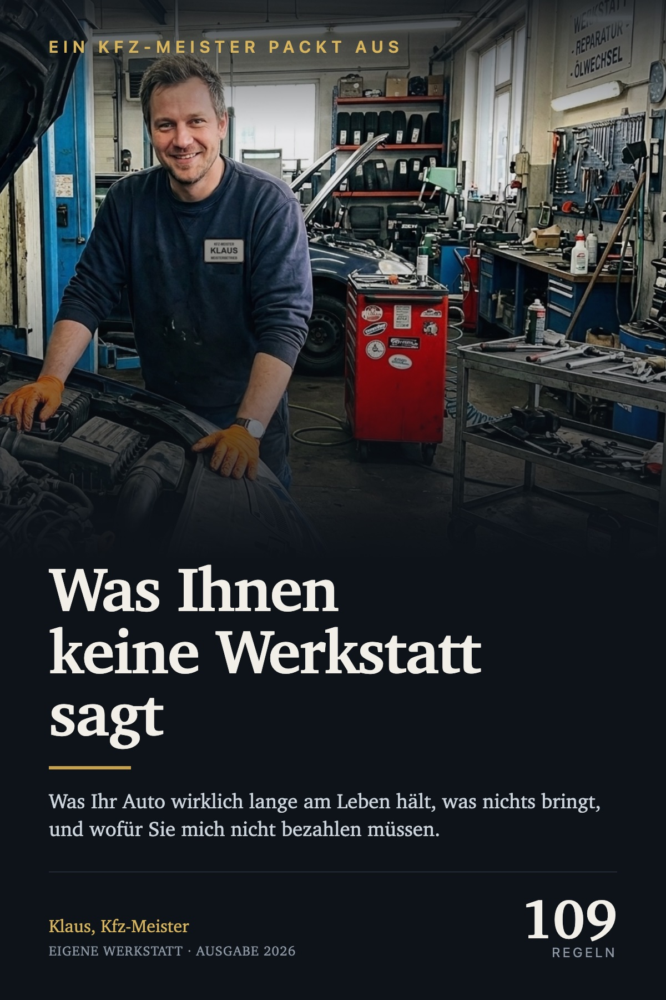

Kaltstart und Öl. Kurzstrecke. Sprit und die Geldmythen. Diesel. Getriebe, Riemen, Kette, Kühlung. Rost, Elektrik und Bremsen. Die ehrlichen Kapitel. Selbst machen und der Notfall.
Das ist der Grund, warum Sie mir den Rest glauben können. Ein Buch, das alles behauptet, behauptet nichts.
Belegt heißt, dass eine Messung oder eine Herstellerangabe dahintersteht. Wahrscheinlich heißt, dass die Begründung solide ist, die Zahlen aber aus der Praxis stammen. Werkstatt-Erfahrung heißt, dass ich Ihnen sage, worauf wir im Betrieb achten, ohne einen Beleg vorlegen zu können.
Und wo eine verbreitete Zahl keine Quelle hat, steht das ausdrücklich dabei. Auch dann, wenn die Zahl mir nützen würde.
Es geht nicht darum, Werkstätten schlecht zu machen. Die meisten Leute verlieren dort kein Geld, weil jemand sie betrügt, sondern weil sie die Begriffe nicht kennen.
Alle Kontrollleuchten in drei Gruppen sortiert: sofort anhalten, vorsichtig zur Werkstatt, oder die Woche zu Ende fahren. Eine Seite fürs Handschuhfach.
Die Monats- und Jahresintervalle auf der Vorderseite, die Notfallabläufe auf der Rückseite. Ausdrucken, ausschneiden, ins Auto legen.
Keine Reparaturanleitung und kein Ersatz für eine Werkstatt. Arbeiten an Bremsen, Airbags, Kraftstoffanlage und tragenden Teilen gehören in fachkundige Hände, und genau das steht auch so im Buch, mit Begründung.
Es gibt keine Zusage über eine bestimmte Laufleistung. Was Ihr Auto erreicht, hängt von Fahrzeug, Zustand und Fahrweise ab. Das Buch verbessert Ihre Entscheidungen, nicht Ihr Blech.
Wenn das Buch Ihnen nichts bringt, bekommen Sie Ihr Geld innerhalb von 15 Tagen zurück. Ohne Begründung, abgewickelt über Hotmart.
Sofortiger Download · 115 Seiten · zwei Beigaben zum Ausdrucken · 15 Tage Geld zurück
Dieses Buch ersetzt keine Untersuchung und keine Reparatur durch eine Fachwerkstatt. Sicherheitsrelevante Arbeiten an Bremsen, Airbags, Kraftstoffanlage, Lenkung und tragenden Teilen gehören in fachkundige Hände. Preisangaben im Buch und auf dieser Seite sind Größenordnungen und geben den Stand der Drucklegung wieder.
Abwicklung und Auslieferung über Hotmart. Fragen zum Produkt: milomaticltd@gmail.com